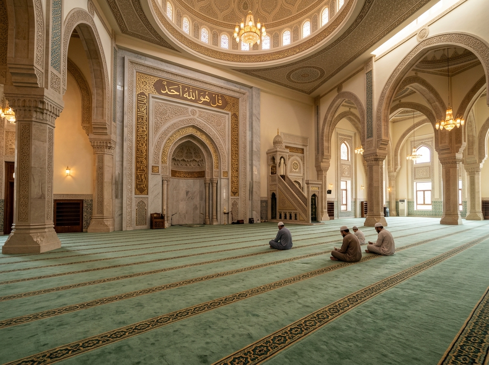

Sarana Prasarana
Fasilitas Masjid Al Firdaus
Disediakan dan dirawat secara rutin oleh Seksi Pembangunan & Seksi Usaha/Perlengkapan Takmir.
Dokumentasi Foto
Galeri Suasana Tempat Ibadah
Klik pada foto untuk melihat tampilan resolusi penuh (Full Screen).

